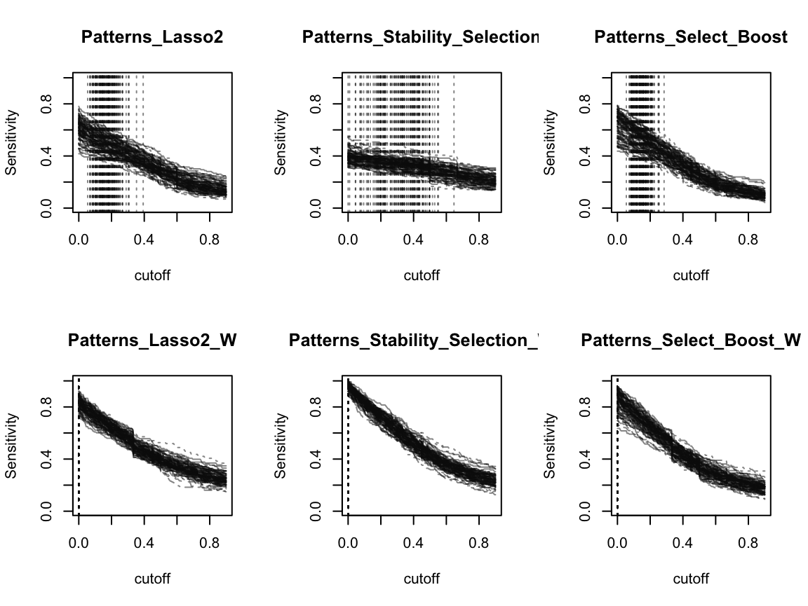
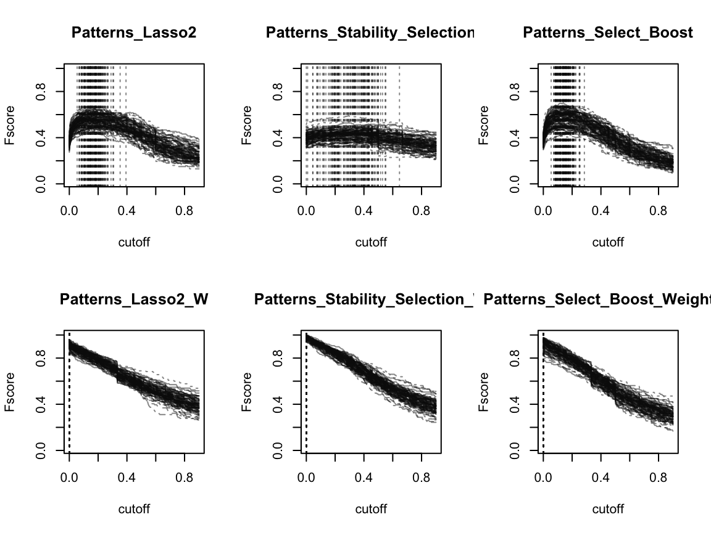

vignettes/benchmarking-selectboost-networks.Rmd
benchmarking-selectboost-networks.RmdThis vignettes is a first benchmark of the use of the selectboost algorithm for stable and robust scale free network reverse engineering. It differs from the vignette Towards confidence estimates in Cascade Networks using the SelectBoost package where we compute confidence indices after the model was fitted. In this vignette, we use the Selecboost algorithm as a part of the inference algorithm in order to retrieve the most stable and robust links (against correlated resampling) between the genes of the network.
If you are a Linux/Unix or a Macos user, you can install a version of SelectBoost with support for doMC from github with:
Since the simulation time is quite large, we shipped the results with the package as an example dataset. We provide the code to rerun the simulations at the end of the vignette.
The following allows to reproduce some the figures of the article Aouadi et al. (2018), <arXiv:1810.01670>. The remaining code to create the datasets saved with the package is reproduced at the end of the vignette.
Some simulation results were stored in the results_simuls_reverse_engineering_v3 dataset provided with the package.
rangeCPy_S=range(sensitivity_C,sensitivity_PL,sensitivity_PL2,sensitivity_PL2_W,sensitivity_PL2_tW,sensitivity_PSel,sensitivity_PSel_W,sensitivity_PSel.5,sensitivity_PSel.e2,sensitivity_PSel.5.e2,sensitivity_robust,sensitivity_PB,predictive_positive_value_PB_095_075,predictive_positive_value_PB_075_075,sensitivity_PB_W)
rangeCPy_PPV=range(predictive_positive_value_C,predictive_positive_value_PL,predictive_positive_value_PL2,predictive_positive_value_PL2_W,predictive_positive_value_PL2_tW,predictive_positive_value_PSel,predictive_positive_value_PSel_W,predictive_positive_value_PSel.5,predictive_positive_value_PSel.e2,predictive_positive_value_PSel.5.e2,predictive_positive_value_robust,predictive_positive_value_PB,predictive_positive_value_PB_095_075,predictive_positive_value_PB_075_075,predictive_positive_value_PB_W)
rangeCPy_F=range(F_score_C,F_score_PL,F_score_PL2,F_score_PL2_W,F_score_PL2_tW,F_score_PSel,F_score_PSel_W,F_score_PSel.5,F_score_PSel.e2,F_score_PSel.5.e2,F_score_PB,F_score_PB_095_075,F_score_PB_075_075,F_score_PB_W)
rangeCPx=range(test.seq_C,test.seq_PL,test.seq_PL2,test.seq_PL2_W,test.seq_PL2_tW,test.seq_PSel,test.seq_PSel_W,test.seq_PSel.5,test.seq_PSel.e2,test.seq_PSel.5.e2,test.seq_robust,test.seq_PB,test.seq_PB_095_075,test.seq_PB_075_075,test.seq_PB_W)layout(matrix(1:6,nrow=2))
matplot(t(test.seq_PL2),t(sensitivity_PL2),type="l",xlab="cutoff",ylab="Sensitivity",main="Patterns_Lasso2",ylim=rangeCPy_S,col=grey(.05,NULL))
abline(v=nv_PL2,col=grey(.05,NULL),lty=3)
matplot(t(test.seq_PL2_W),t(sensitivity_PL2_W),type="l",xlab="cutoff",ylab="Sensitivity",main="Patterns_Lasso2_W",ylim=rangeCPy_S,col=grey(.05,NULL))
abline(v=nv_PL2_W,col=grey(.05,NULL),lty=3)
matplot(t(test.seq_PSel),t(sensitivity_PSel),type="l",xlab="cutoff",ylab="Sensitivity",main="Patterns_Stability_Selection",ylim=rangeCPy_S,col=grey(.05,NULL))
abline(v=nv_PSel,col=grey(.05,NULL),lty=3)
matplot(t(test.seq_PSel_W),t(sensitivity_PSel_W),type="l",xlab="cutoff",ylab="Sensitivity",main="Patterns_Stability_Selection_W",ylim=rangeCPy_S,col=grey(.05,NULL))
abline(v=nv_PSel_W,col=grey(.05,NULL),lty=3)
matplot(t(test.seq_PB),t(sensitivity_PB),type="l",xlab="cutoff",ylab="Sensitivity",main="Patterns_Select_Boost",ylim=rangeCPy_S,col=grey(.05,NULL))
abline(v=nv_PB,col=grey(.05,NULL),lty=3)
matplot(t(test.seq_PB_W),t(sensitivity_PB_W),type="l",xlab="cutoff",ylab="Sensitivity",main="Patterns_Select_Boost_W",ylim=rangeCPy_S,col=grey(.05,NULL))
abline(v=nv_PB_W,col=grey(.05,NULL),lty=3)
Run the code to plot the graph.
layout(matrix(1:6,nrow=2))
matplot(t(test.seq_robust),t(sensitivity_robust),type="l",xlab="cutoff",ylab="Sensitivity",main="Patterns_Robust",ylim=rangeCPy_S,col=grey(.05,NULL))
abline(v=nv_robust,col=grey(.05,NULL),lty=3)
matplot(t(test.seq_PB),t(sensitivity_PB),type="l",xlab="cutoff",ylab="Sensitivity",main="Patterns_Select_Boost",ylim=rangeCPy_S,col=grey(.05,NULL))
abline(v=nv_PB,col=grey(.05,NULL),lty=3)
matplot(t(test.seq_PB_095_075),t(sensitivity_PB_095_075),type="l",xlab="cutoff",ylab="Sensitivity",main="Patterns_Select_Boost_095_075",ylim=rangeCPy_S,col=grey(.05,NULL))
abline(v=nv_PB_095_075,col=grey(.05,NULL),lty=3)
matplot(t(test.seq_PB_075_075),t(sensitivity_PB_075_075),type="l",xlab="cutoff",ylab="Sensitivity",main="Patterns_Select_Boost_075_075",ylim=rangeCPy_S,col=grey(.05,NULL))
abline(v=nv_PB_075_075,col=grey(.05,NULL),lty=3)
matplot(t(test.seq_PB_W),t(sensitivity_PB_W),type="l",xlab="cutoff",ylab="Sensitivity",main="Patterns_Select_Boost_W",ylim=rangeCPy_S,col=grey(.05,NULL))
abline(v=nv_PB_W,col=grey(.05,NULL),lty=3)
matplot(t(test.seq_PSel),t(sensitivity_PSel),type="l",xlab="cutoff",ylab="Sensitivity",main="Patterns_Stability_Selection",ylim=rangeCPy_S,col=grey(.05,NULL))
abline(v=nv_PSel,col=grey(.05,NULL),lty=3)layout(matrix(1:6,nrow=2))
matplot(t(test.seq_PL2),t(predictive_positive_value_PL2),type="l",xlab="cutoff",ylab="Predictive Positive Value",main="Patterns_Lasso2",ylim=rangeCPy_PPV,col=grey(.05,NULL))
abline(v=nv_PL2,col=grey(.05,NULL),lty=3)
matplot(t(test.seq_PL2_W),t(predictive_positive_value_PL2_W),type="l",xlab="cutoff",ylab="Predictive Positive Value",main="Patterns_Lasso2_W",ylim=rangeCPy_PPV,col=grey(.05,NULL))
abline(v=nv_PL2_W,col=grey(.05,NULL),lty=3)
matplot(t(test.seq_PSel),t(predictive_positive_value_PSel),type="l",xlab="cutoff",ylab="Predictive Positive Value",main="Patterns_Stability_Selection",ylim=rangeCPy_PPV,col=grey(.05,NULL))
abline(v=nv_PSel,col=grey(.05,NULL),lty=3)
matplot(t(test.seq_PSel_W),t(predictive_positive_value_PSel_W),type="l",xlab="cutoff",ylab="Predictive Positive Value",main="Patterns_Stability_Selection_W",ylim=rangeCPy_PPV,col=grey(.05,NULL))
abline(v=nv_PSel_W,col=grey(.05,NULL),lty=3)
matplot(t(test.seq_PB),t(predictive_positive_value_PB),type="l",xlab="cutoff",ylab="Predictive Positive Value",main="Patterns_Select_Boost",ylim=rangeCPy_PPV,col=grey(.05,NULL))
abline(v=nv_PB,col=grey(.05,NULL),lty=3)
matplot(t(test.seq_PB_W),t(predictive_positive_value_PB_W),type="l",xlab="cutoff",ylab="Predictive Positive Value",main="Patterns_Select_Boost_Weighted",ylim=rangeCPy_PPV,col=grey(.05,NULL))
abline(v=nv_PB_W,col=grey(.05,NULL),lty=3)Run the code to plot the graph.
layout(matrix(1:6,nrow=2))
matplot(t(test.seq_robust),t(predictive_positive_value_robust),type="l",xlab="cutoff",ylab="Predictive Positive Value",main="Patterns_Robust",ylim=rangeCPy_PPV,col=grey(.05,NULL))
abline(v=nv_robust,col=grey(.05,NULL),lty=3)
matplot(t(test.seq_PB),t(predictive_positive_value_PB),type="l",xlab="cutoff",ylab="Predictive Positive Value",main="Patterns_Select_Boost",ylim=rangeCPy_PPV,col=grey(.05,NULL))
abline(v=nv_PB,col=grey(.05,NULL),lty=3)
matplot(t(test.seq_PB_095_075),t(predictive_positive_value_PB_095_075),type="l",xlab="cutoff",ylab="Predictive Positive Value",main="Patterns_Select_Boost_095_075",ylim=rangeCPy_PPV,col=grey(.05,NULL))
abline(v=nv_PB_095_075,col=grey(.05,NULL),lty=3)
matplot(t(test.seq_PB_075_075),t(predictive_positive_value_PB_075_075),type="l",xlab="cutoff",ylab="Predictive Positive Value",main="Patterns_Select_Boost_075_075",ylim=rangeCPy_PPV,col=grey(.05,NULL))
abline(v=nv_PB_075_075,col=grey(.05,NULL),lty=3)
matplot(t(test.seq_PB_W),t(predictive_positive_value_PB_W),type="l",xlab="cutoff",ylab="Predictive Positive Value",main="Patterns_Select_Boost_Weighted",ylim=rangeCPy_PPV,col=grey(.05,NULL))
abline(v=nv_PB_W,col=grey(.05,NULL),lty=3)
matplot(t(test.seq_PSel),t(predictive_positive_value_PSel),type="l",xlab="cutoff",ylab="Predictive Positive Value",main="Patterns_Stability_Selection",ylim=rangeCPy_PPV,col=grey(.05,NULL))
abline(v=nv_PSel,col=grey(.05,NULL),lty=3)layout(matrix(1:6,nrow=2))
matplot(t(test.seq_PL2),t(F_score_PL2),type="l",xlab="cutoff",ylab="Fscore",main="Patterns_Lasso2",ylim=rangeCPy_F,col=grey(.05,NULL))
abline(v=nv_PL2,col=grey(.05,NULL),lty=3)
matplot(t(test.seq_PL2_W),t(F_score_PL2_W),type="l",xlab="cutoff",ylab="Fscore",main="Patterns_Lasso2_W",ylim=rangeCPy_F,col=grey(.05,NULL))
abline(v=nv_PL2_W,col=grey(.05,NULL),lty=3)
matplot(t(test.seq_PSel),t(F_score_PSel),type="l",xlab="cutoff",ylab="Fscore",main="Patterns_Stability_Selection",ylim=rangeCPy_F,col=grey(.05,NULL))
abline(v=nv_PSel,col=grey(.05,NULL),lty=3)
matplot(t(test.seq_PSel_W),t(F_score_PSel_W),type="l",xlab="cutoff",ylab="Fscore",main="Patterns_Stability_Selection_W",ylim=rangeCPy_F,col=grey(.05,NULL))
abline(v=nv_PSel_W,col=grey(.05,NULL),lty=3)
matplot(t(test.seq_PB),t(F_score_PB),type="l",xlab="cutoff",ylab="Fscore",main="Patterns_Select_Boost",ylim=rangeCPy_F,col=grey(.05,NULL))
abline(v=nv_PB,col=grey(.05,NULL),lty=3)
matplot(t(test.seq_PB_W),t(F_score_PB_W),type="l",xlab="cutoff",ylab="Fscore",main="Patterns_Select_Boost_Weighted",ylim=rangeCPy_F,col=grey(.05,NULL))
abline(v=nv_PB_W,col=grey(.05,NULL),lty=3)
Run the code to plot the graph.
layout(matrix(1:6,nrow=2))
matplot(t(test.seq_robust),t(F_score_robust),type="l",xlab="cutoff",ylab="Fscore",main="Patterns_Robust",ylim=rangeCPy_F,col=grey(.05,NULL))
abline(v=nv_robust,col=grey(.05,NULL),lty=3)
matplot(t(test.seq_PB),t(F_score_PB),type="l",xlab="cutoff",ylab="Fscore",main="Patterns_Select_Boost",ylim=rangeCPy_F,col=grey(.05,NULL))
abline(v=nv_PB,col=grey(.05,NULL),lty=3)
matplot(t(test.seq_PB_095_075),t(F_score_PB_095_075),type="l",xlab="cutoff",ylab="Fscore",main="Patterns_Select_Boost_095_075",ylim=rangeCPy_F,col=grey(.05,NULL))
abline(v=nv_PB_095_075,col=grey(.05,NULL),lty=3)
matplot(t(test.seq_PB_075_075),t(F_score_PB_075_075),type="l",xlab="cutoff",ylab="Fscore",main="Patterns_Select_Boost_075_075",ylim=rangeCPy_F,col=grey(.05,NULL))
abline(v=nv_PB_075_075,col=grey(.05,NULL),lty=3)
matplot(t(test.seq_PB_W),t(F_score_PB_W),type="l",xlab="cutoff",ylab="Fscore",main="Patterns_Select_Boost_Weighted",ylim=rangeCPy_F,col=grey(.05,NULL))
abline(v=nv_PB_W,col=grey(.05,NULL),lty=3)
matplot(t(test.seq_PSel),t(F_score_PSel),type="l",xlab="cutoff",ylab="Fscore",main="Patterns_Stability_Selection",ylim=rangeCPy_F,col=grey(.05,NULL))
abline(v=nv_PSel,col=grey(.05,NULL),lty=3)Run the code to get the graphics. ## Plot sensitivity results
layout(matrix(1:6,nrow=2))
matplot(t(test.seq_C),t(sensitivity_C),type="l",xlab="cutoff",ylab="Sensitivity",main="Cascade",ylim=rangeCPy_S,col=grey(.05,NULL))
abline(v=nv_C,col=grey(.05,NULL),lty=3)
matplot(t(test.seq_PL),t(sensitivity_PL),type="l",xlab="cutoff",ylab="Sensitivity",main="Patterns_Lasso",ylim=rangeCPy_S,col=grey(.05,NULL))
abline(v=nv_PL,col=grey(.05,NULL),lty=3)
matplot(t(test.seq_PL2_W),t(sensitivity_PL2_W),type="l",xlab="cutoff",ylab="Sensitivity",main="Patterns_Lasso2_W",ylim=rangeCPy_S,col=grey(.05,NULL))
abline(v=nv_PL2_W,col=grey(.05,NULL),lty=3)
matplot(t(test.seq_PSel),t(sensitivity_PSel),type="l",xlab="cutoff",ylab="Sensitivity",main="Patterns_Stability_Selection",ylim=rangeCPy_S,col=grey(.05,NULL))
abline(v=nv_PSel,col=grey(.05,NULL),lty=3)
matplot(t(test.seq_PSel_W),t(sensitivity_PSel_W),type="l",xlab="cutoff",ylab="Sensitivity",main="Patterns_Stability_Selection_W",ylim=rangeCPy_S,col=grey(.05,NULL))
abline(v=nv_PSel_W,col=grey(.05,NULL),lty=3)
matplot(t(test.seq_PL2_tW),t(sensitivity_PL2_tW),type="l",xlab="cutoff",ylab="Sensitivity",main="Patterns_Lasso2_wrongW",ylim=rangeCPy_S,col=grey(.05,NULL))
abline(v=nv_PL2_tW,col=grey(.05,NULL),lty=3)layout(matrix(1:6,nrow=2))
matplot(t(test.seq_PSel),t(sensitivity_PSel),type="l",xlab="cutoff",ylab="Sensitivity",main="Patterns_Stability_Selection",ylim=rangeCPy_S,col=grey(.05,NULL))
abline(v=nv_PSel,col=grey(.05,NULL),lty=3)
matplot(t(test.seq_PSel.5),t(sensitivity_PSel.5),type="l",xlab="cutoff",ylab="Sensitivity",main="Patterns_Stability_Selection_.5",ylim=rangeCPy_S,col=grey(.05,NULL))
abline(v=nv_PSel.5,col=grey(.05,NULL),lty=3)
matplot(t(test.seq_PSel.e2),t(sensitivity_PSel.e2),type="l",xlab="cutoff",ylab="Sensitivity",main="Patterns_Stability_Selection.e2",ylim=rangeCPy_S,col=grey(.05,NULL))
abline(v=nv_PSel.e2,col=grey(.05,NULL),lty=3)
matplot(t(test.seq_PSel.5.e2),t(sensitivity_PSel.5.e2),type="l",xlab="cutoff",ylab="Sensitivity",main="Patterns_Stability_Selection_.5.e2",ylim=rangeCPy_S,col=grey(.05,NULL))
abline(v=nv_PSel.5.e2,col=grey(.05,NULL),lty=3)
matplot(t(test.seq_PL2),t(sensitivity_PL2),type="l",xlab="cutoff",ylab="Sensitivity",main="Patterns_Lasso2",ylim=rangeCPy_S,col=grey(.05,NULL))
abline(v=nv_PL2,col=grey(.05,NULL),lty=3)
matplot(t(test.seq_PB),t(sensitivity_PB),type="l",xlab="cutoff",ylab="Sensitivity",main="Patterns_Select_Boost",ylim=rangeCPy_S,col=grey(.05,NULL))
abline(v=nv_PB,col=grey(.05,NULL),lty=3)layout(matrix(1:6,nrow=2))
matplot(t(test.seq_C),t(predictive_positive_value_C),type="l",xlab="cutoff",ylab="Predictive Positive Value",main="Cascade",ylim=rangeCPy_PPV,col=grey(.05,NULL))
abline(v=nv_C,col=grey(.05,NULL),lty=3)
matplot(t(test.seq_PL),t(predictive_positive_value_PL),type="l",xlab="cutoff",ylab="Predictive Positive Value",main="Patterns_Lasso",ylim=rangeCPy_PPV,col=grey(.05,NULL))
abline(v=nv_PL,col=grey(.05,NULL),lty=3)
matplot(t(test.seq_PL2_W),t(predictive_positive_value_PL2_W),type="l",xlab="cutoff",ylab="Predictive Positive Value",main="Patterns_Lasso2_W",ylim=rangeCPy_PPV,col=grey(.05,NULL))
abline(v=nv_PL2_W,col=grey(.05,NULL),lty=3)
matplot(t(test.seq_PSel),t(predictive_positive_value_PSel),type="l",xlab="cutoff",ylab="Predictive Positive Value",main="Patterns_Stability_Selection",ylim=rangeCPy_PPV,col=grey(.05,NULL))
abline(v=nv_PSel,col=grey(.05,NULL),lty=3)
matplot(t(test.seq_PSel_W),t(predictive_positive_value_PSel_W),type="l",xlab="cutoff",ylab="Predictive Positive Value",main="Patterns_Stability_Selection_W",ylim=rangeCPy_PPV,col=grey(.05,NULL))
abline(v=nv_PSel_W,col=grey(.05,NULL),lty=3)
matplot(t(test.seq_PL2_tW),t(predictive_positive_value_PL2_tW),type="l",xlab="cutoff",ylab="Predictive Positive Value",main="Patterns_Lasso2_wrongW",ylim=rangeCPy_PPV,col=grey(.05,NULL))
abline(v=nv_PL2_tW,col=grey(.05,NULL),lty=3)layout(matrix(1:6,nrow=2))
matplot(t(test.seq_PSel),t(predictive_positive_value_PSel),type="l",xlab="cutoff",ylab="Predictive Positive Value",main="Patterns_Stability_Selection",ylim=rangeCPy_PPV,col=grey(.05,NULL))
abline(v=nv_PSel,col=grey(.05,NULL),lty=3)
matplot(t(test.seq_PSel.5),t(predictive_positive_value_PSel.5),type="l",xlab="cutoff",ylab="Predictive Positive Value",main="Patterns_Stability_Selection.5",ylim=rangeCPy_PPV,col=grey(.05,NULL))
abline(v=nv_PSel.5,col=grey(.05,NULL),lty=3)
matplot(t(test.seq_PSel.e2),t(predictive_positive_value_PSel.e2),type="l",xlab="cutoff",ylab="Predictive Positive Value",main="Patterns_Stability_Selection",ylim=rangeCPy_PPV,col=grey(.05,NULL))
abline(v=nv_PSel,col=grey(.05,NULL),lty=3)
matplot(t(test.seq_PSel.5.e2),t(predictive_positive_value_PSel.5.e2),type="l",xlab="cutoff",ylab="Predictive Positive Value",main="Patterns_Stability_Selection.5.e2",ylim=rangeCPy_PPV,col=grey(.05,NULL))
abline(v=nv_PSel.5.e2,col=grey(.05,NULL),lty=3)
matplot(t(test.seq_PL2),t(predictive_positive_value_PL2),type="l",xlab="cutoff",ylab="Predictive Positive Value",main="Patterns_Lasso2",ylim=rangeCPy_PPV,col=grey(.05,NULL))
abline(v=nv_PL2,col=grey(.05,NULL),lty=3)
matplot(t(test.seq_PB),t(predictive_positive_value_PB),type="l",xlab="cutoff",ylab="Predictive Positive Value",main="Patterns_Select_Boost",ylim=rangeCPy_PPV,col=grey(.05,NULL))
abline(v=nv_PB,col=grey(.05,NULL),lty=3)layout(matrix(1:6,nrow=2))
matplot(t(test.seq_C),t(F_score_C),type="l",xlab="cutoff",ylab="Fscore",main="Cascade",ylim=rangeCPy_F,col=grey(.05,NULL))
abline(v=nv_C,col=grey(.05,NULL),lty=3)
matplot(t(test.seq_PL),t(F_score_PL),type="l",xlab="cutoff",ylab="Fscore",main="Patterns_Lasso",ylim=rangeCPy_F,col=grey(.05,NULL))
abline(v=nv_PL,col=grey(.05,NULL),lty=3)
matplot(t(test.seq_PL2_W),t(F_score_PL2_W),type="l",xlab="cutoff",ylab="Fscore",main="Patterns_Lasso2_W",ylim=rangeCPy_F,col=grey(.05,NULL))
abline(v=nv_PL2_W,col=grey(.05,NULL),lty=3)
matplot(t(test.seq_PSel),t(F_score_PSel),type="l",xlab="cutoff",ylab="Fscore",main="Patterns_Stability_Selection",ylim=rangeCPy_F,col=grey(.05,NULL))
abline(v=nv_PSel,col=grey(.05,NULL),lty=3)
matplot(t(test.seq_PSel_W),t(F_score_PSel_W),type="l",xlab="cutoff",ylab="Fscore",main="Patterns_Stability_Selection_W",ylim=rangeCPy_F,col=grey(.05,NULL))
abline(v=nv_PSel_W,col=grey(.05,NULL),lty=3)
matplot(t(test.seq_PL2_tW),t(F_score_PL2_tW),type="l",xlab="cutoff",ylab="Fscore",main="Patterns_Lasso2_wrongW",ylim=rangeCPy_F,col=grey(.05,NULL))
abline(v=nv_PL2_tW,col=grey(.05,NULL),lty=3)layout(matrix(1:6,nrow=2))
matplot(t(test.seq_PSel),t(F_score_PSel),type="l",xlab="cutoff",ylab="Fscore",main="Patterns_Stability_Selection",ylim=rangeCPy_F,col=grey(.25,NULL))
abline(v=nv_PSel,lty=3,col=grey(.05,NULL))
matplot(t(test.seq_PSel.5),t(F_score_PSel.5),type="l",xlab="cutoff",ylab="Fscore",main="Patterns_Stability_Selection.5",ylim=rangeCPy_F,col=grey(.25,NULL))
abline(v=nv_PSel.5,lty=3,col=grey(.05,NULL))
matplot(t(test.seq_PSel.e2),t(F_score_PSel.e2),type="l",xlab="cutoff",ylab="Fscore",main="Patterns_Stability_Selection.e2",ylim=rangeCPy_F,col=grey(.25,NULL))
abline(v=nv_PSel.e2,lty=3,col=grey(.05,NULL))
matplot(t(test.seq_PSel.5.e2),t(F_score_PSel.5.e2),type="l",xlab="cutoff",ylab="Fscore",main="Patterns_Stability_Selection.5.e2",ylim=rangeCPy_F,col=grey(.25,NULL))
abline(v=nv_PSel.5.e2,lty=3,col=grey(.05,NULL))
matplot(t(test.seq_PL2),t(F_score_PL2),type="l",xlab="cutoff",ylab="Fscore",main="Patterns_Lasso2",ylim=rangeCPy_F,col=grey(.05,NULL))
abline(v=nv_PL2,col=grey(.05,NULL),lty=3)
matplot(t(test.seq_PB),t(F_score_PB),type="l",xlab="cutoff",ylab="Fscore",main="Patterns_Select_Boost",ylim=rangeCPy_F,col=grey(.05,NULL))
abline(v=nv_PB,col=grey(.05,NULL),lty=3)Set the working directory to a writable one since the simulated datasets and the results are saved during the simulation process.
library(Cascade)
if(exists("M")){rm(M)}
BBB=1
NNN=100
{
sensitivity_C<-matrix(rep(NA,200*NNN),nrow=NNN)
sensitivity_PL<-matrix(rep(NA,200*NNN),nrow=NNN)
sensitivity_PL2<-matrix(rep(NA,200*NNN),nrow=NNN)
sensitivity_PL2_W<-matrix(rep(NA,200*NNN),nrow=NNN)
sensitivity_PL2_tW<-matrix(rep(NA,200*NNN),nrow=NNN)
sensitivity_PSel<-matrix(rep(NA,200*NNN),nrow=NNN)
sensitivity_PSel_W<-matrix(rep(NA,200*NNN),nrow=NNN)
sensitivity_PSel.5<-matrix(rep(NA,200*NNN),nrow=NNN)
sensitivity_PSel.e2<-matrix(rep(NA,200*NNN),nrow=NNN)
sensitivity_PSel.5.e2<-matrix(rep(NA,200*NNN),nrow=NNN)
sensitivity_robust<-matrix(rep(NA,200*NNN),nrow=NNN)
sensitivity_PB<-matrix(rep(NA,200*NNN),nrow=NNN)
sensitivity_PB_095_075<-matrix(rep(NA,200*NNN),nrow=NNN)
sensitivity_PB_075_075<-matrix(rep(NA,200*NNN),nrow=NNN)
sensitivity_PB_W<-matrix(rep(NA,200*NNN),nrow=NNN)
predictive_positive_value_C<-matrix(rep(NA,200*NNN),nrow=NNN)
predictive_positive_value_PL<-matrix(rep(NA,200*NNN),nrow=NNN)
predictive_positive_value_PL2<-matrix(rep(NA,200*NNN),nrow=NNN)
predictive_positive_value_PL2_W<-matrix(rep(NA,200*NNN),nrow=NNN)
predictive_positive_value_PL2_tW<-matrix(rep(NA,200*NNN),nrow=NNN)
predictive_positive_value_PSel<-matrix(rep(NA,200*NNN),nrow=NNN)
predictive_positive_value_PSel_W<-matrix(rep(NA,200*NNN),nrow=NNN)
predictive_positive_value_PSel.5<-matrix(rep(NA,200*NNN),nrow=NNN)
predictive_positive_value_PSel.e2<-matrix(rep(NA,200*NNN),nrow=NNN)
predictive_positive_value_PSel.5.e2<-matrix(rep(NA,200*NNN),nrow=NNN)
predictive_positive_value_robust<-matrix(rep(NA,200*NNN),nrow=NNN)
predictive_positive_value_PB<-matrix(rep(NA,200*NNN),nrow=NNN)
predictive_positive_value_PB_095_075<-matrix(rep(NA,200*NNN),nrow=NNN)
predictive_positive_value_PB_075_075<-matrix(rep(NA,200*NNN),nrow=NNN)
predictive_positive_value_PB_W<-matrix(rep(NA,200*NNN),nrow=NNN)
F_score_C<-matrix(rep(NA,200*NNN),nrow=NNN)
F_score_PL<-matrix(rep(NA,200*NNN),nrow=NNN)
F_score_PL2<-matrix(rep(NA,200*NNN),nrow=NNN)
F_score_PL2_W<-matrix(rep(NA,200*NNN),nrow=NNN)
F_score_PL2_tW<-matrix(rep(NA,200*NNN),nrow=NNN)
F_score_PSel<-matrix(rep(NA,200*NNN),nrow=NNN)
F_score_PSel_W<-matrix(rep(NA,200*NNN),nrow=NNN)
F_score_PSel.5<-matrix(rep(NA,200*NNN),nrow=NNN)
F_score_PSel.e2<-matrix(rep(NA,200*NNN),nrow=NNN)
F_score_PSel.5.e2<-matrix(rep(NA,200*NNN),nrow=NNN)
F_score_robust<-matrix(rep(NA,200*NNN),nrow=NNN)
F_score_PB<-matrix(rep(NA,200*NNN),nrow=NNN)
F_score_PB_095_075<-matrix(rep(NA,200*NNN),nrow=NNN)
F_score_PB_075_075<-matrix(rep(NA,200*NNN),nrow=NNN)
F_score_PB_W<-matrix(rep(NA,200*NNN),nrow=NNN)
#Here are the cutoff level tested
test.seq_C<-matrix(rep(NA,200*NNN),nrow=NNN)
test.seq_PL<-matrix(rep(NA,200*NNN),nrow=NNN)
test.seq_PL2<-matrix(rep(NA,200*NNN),nrow=NNN)
test.seq_PL2_W<-matrix(rep(NA,200*NNN),nrow=NNN)
test.seq_PL2_tW<-matrix(rep(NA,200*NNN),nrow=NNN)
test.seq_PSel<-matrix(rep(NA,200*NNN),nrow=NNN)
test.seq_PSel_W<-matrix(rep(NA,200*NNN),nrow=NNN)
test.seq_PSel.5<-matrix(rep(NA,200*NNN),nrow=NNN)
test.seq_PSel.e2<-matrix(rep(NA,200*NNN),nrow=NNN)
test.seq_PSel.5.e2<-matrix(rep(NA,200*NNN),nrow=NNN)
test.seq_robust<-matrix(rep(NA,200*NNN),nrow=NNN)
test.seq_PB<-matrix(rep(NA,200*NNN),nrow=NNN)
test.seq_PB_095_075<-matrix(rep(NA,200*NNN),nrow=NNN)
test.seq_PB_075_075<-matrix(rep(NA,200*NNN),nrow=NNN)
test.seq_PB_W<-matrix(rep(NA,200*NNN),nrow=NNN)
nv_C<-rep(0,NNN)
nv_PL<-rep(0,NNN)
nv_PL2<-rep(0,NNN)
nv_PL2_W<-rep(0,NNN)
nv_PL2_tW<-rep(0,NNN)
nv_PSel<-rep(0,NNN)
nv_PSel_W<-rep(0,NNN)
nv_PSel.5<-rep(0,NNN)
nv_PSel.e2<-rep(0,NNN)
nv_PSel.5.e2<-rep(0,NNN)
nv_robust<-rep(0,NNN)
nv_PB<-rep(0,NNN)
nv_PB_095_075<-rep(0,NNN)
nv_PB_075_075<-rep(0,NNN)
nv_PB_W<-rep(0,NNN)
#We change F matrices
T<-4
F<-array(0,c(T-1,T-1,T*(T-1)/2))
for(i in 1:(T*(T-1)/2)){diag(F[,,i])<-1}
F[,,2]<-F[,,2]*0.2
F[2,1,2]<-1
F[3,2,2]<-1
F[,,4]<-F[,,2]*0.3
F[3,1,4]<-1
F[,,5]<-F[,,2]
TFshape=Patterns::CascadeFshape(ngrp = 4,sqF = 4)
TF=Patterns::CascadeFinit(ngrp = 4,sqF = 4)
# TF[,,1]
TF[,,2]<-cbind(rbind(rep(0,3),F[,,1]),rep(0,4))
TF[,,3]<-cbind(rbind(rep(0,3),F[,,2]),rep(0,4))
TF[,,4]<-cbind(rbind(rep(0,3),F[,,3]),rep(0,4))
# TF[,,5]
# TF[,,6]
TF[,,7]<-cbind(rbind(rep(0,3),F[,,4]),rep(0,4))
TF[,,8]<-cbind(rbind(rep(0,3),F[,,5]),rep(0,4))
# TF[,,9]
# TF[,,10]
# TF[,,11]
TF[,,12]<-cbind(rbind(rep(0,3),F[,,6]),rep(0,4))
# TF[,,13]
# TF[,,14]
# TF[,,15]
# TF[,,16]
}
#We set the seed to make the results reproducible
set.seed(1)
for(iii in BBB:NNN){
#We create a random scale free network
if(!file.exists(paste(paste("Net",iii,sep="_"),".RData",sep=""))){
Net<-Cascade::network_random(
nb=100,
time_label=rep(1:4,each=25),
exp=1,
init=1,
regul=round(rexp(100,1))+1,
min_expr=0.1,
max_expr=2,
casc.level=0.4
)
Net@F<-F
assign(paste("Net",iii,sep="_"),Net);rm(Net)
save(list=paste("Net",iii,sep="_"),file=paste(paste("Net",iii,sep="_"),".RData",sep=""))
} else {
load(file=paste(paste("Net",iii,sep="_"),".RData",sep=""))
}
#We simulate gene expression according to the network Net
if(!file.exists(paste(paste("M",iii,sep="_"),".RData",sep=""))){
assign(paste("M",iii,sep="_"),Cascade::gene_expr_simulation(
network=get(paste("Net",iii,sep="_")),
time_label=rep(1:4,each=25),
subject=5,
level_peak=200))
save(list=paste("M",iii,sep="_"),file=paste(paste("M",iii,sep="_"),".RData",sep=""))
} else {
load(file=paste(paste("M",iii,sep="_"),".RData",sep=""))
}
}
#We infer the new network
for(iii in BBB:NNN){
if(!file.exists(paste(paste("Net_inf_C",iii,sep="_"),".RData",sep=""))){
assign(paste("Net_inf_C",iii,sep="_"),Cascade::inference(get(paste("M",iii,sep="_"))))
save(list=paste("Net_inf_C",iii,sep="_"),file=paste(paste("Net_inf_C",iii,sep="_"),".RData",sep=""))
} else {
load(file=paste(paste("Net_inf_C",iii,sep="_"),".RData",sep=""))
}
}
for(iii in BBB:NNN){
if(!file.exists(paste(paste("Net_inf_PL",iii,sep="_"),".RData",sep=""))){
assign(paste("Net_inf_PL",iii,sep="_"),Patterns::inference(get(paste("M",iii,sep="_")),Finit=TF,Fshape=TFshape,fitfun="LASSO"))
save(list=paste("Net_inf_PL",iii,sep="_"),file=paste(paste("Net_inf_PL",iii,sep="_"),".RData",sep=""))
} else {
load(file=paste(paste("Net_inf_PL",iii,sep="_"),".RData",sep=""))
}
}
for(iii in BBB:NNN){
if(!file.exists(paste(paste("Net_inf_PL2",iii,sep="_"),".RData",sep=""))){
assign(paste("Net_inf_PL2",iii,sep="_"),Patterns::inference(get(paste("M",iii,sep="_")),Finit=TF,Fshape=TFshape,fitfun="LASSO2"))
save(list=paste("Net_inf_PL2",iii,sep="_"),file=paste(paste("Net_inf_PL2",iii,sep="_"),".RData",sep=""))
} else {
load(file=paste(paste("Net_inf_PL2",iii,sep="_"),".RData",sep=""))
}
}
for(iii in BBB:NNN){
Temp_Weights_Net<-slot(get(paste("Net",iii,sep="_")),"network")
Temp_Weights_Net[Temp_Weights_Net!=0]=.1
Temp_Weights_Net[Temp_Weights_Net==0]=1000
assign(paste("Weights_Net",iii,sep="_"),Temp_Weights_Net)
if(!file.exists(paste(paste("Net_inf_PL2_W",iii,sep="_"),".RData",sep=""))){
assign(paste("Net_inf_PL2_W",iii,sep="_"),Patterns::inference(get(paste("M",iii,sep="_")),Finit=TF,Fshape=TFshape,fitfun="LASSO2",priors=get(paste("Weights_Net",iii,sep="_"))))
save(list=c(paste("Net_inf_PL2_W",iii,sep="_"),paste("Weights_Net",iii,sep="_")),file=paste(paste("Net_inf_PL2_W",iii,sep="_"),".RData",sep=""))
} else {
load(file=paste(paste("Net_inf_PL2_W",iii,sep="_"),".RData",sep=""))
}
rm(Temp_Weights_Net)
}
for(iii in BBB:NNN){
Temp_Weights_Net<-slot(get(paste("Net",iii,sep="_")),"network")
Temp_Weights_Net[Temp_Weights_Net!=0]=.1
Temp_Weights_Net[Temp_Weights_Net==0]=1000
assign(paste("Weights_Net",iii,sep="_"),Temp_Weights_Net)
if(!file.exists(paste(paste("Net_inf_PL2_tW",iii,sep="_"),".RData",sep=""))){
assign(paste("Net_inf_PL2_tW",iii,sep="_"),Patterns::inference(get(paste("M",iii,sep="_")),Finit=TF,Fshape=TFshape,fitfun="LASSO2",priors=t(get(paste("Weights_Net",iii,sep="_")))))
save(list=c(paste("Net_inf_PL2_tW",iii,sep="_"),paste("Weights_Net",iii,sep="_")),file=paste(paste("Net_inf_PL2_tW",iii,sep="_"),".RData",sep=""))
} else {
load(file=paste(paste("Net_inf_PL2_tW",iii,sep="_"),".RData",sep=""))
}
rm(Temp_Weights_Net)
}
for(iii in BBB:NNN){
if(!file.exists(paste(paste("Net_inf_PSel",iii,sep="_"),".RData",sep=""))){
assign(paste("Net_inf_PSel",iii,sep="_"),Patterns::inference(get(paste("M",iii,sep="_")),Finit=TF,Fshape=TFshape,fitfun="stability.c060",use.Gram=FALSE,error.stabsel=0.05,pi_thr.stabsel=0.9,mc.cores=1,intercept.stabpath=FALSE))
save(list=paste("Net_inf_PSel",iii,sep="_"),file=paste(paste("Net_inf_PSel",iii,sep="_"),".RData",sep=""))
} else {
load(file=paste(paste("Net_inf_PSel",iii,sep="_"),".RData",sep=""))
}
}
for(iii in BBB:NNN){
Temp_Weights_Net<-slot(get(paste("Net",iii,sep="_")),"network")
Temp_Weights_Net[Temp_Weights_Net!=0]=.1
Temp_Weights_Net[Temp_Weights_Net==0]=1000
assign(paste("Weights_Net",iii,sep="_"),Temp_Weights_Net)
if(!file.exists(paste(paste("Net_inf_PSel_W",iii,sep="_"),".RData",sep=""))){
assign(paste("Net_inf_PSel_W",iii,sep="_"),Patterns::inference(get(paste("M",iii,sep="_")),Finit=TF,Fshape=TFshape,fitfun="stability.c060.weighted",use.Gram=FALSE,error.stabsel=0.05,pi_thr.stabsel=0.9,mc.cores=2,intercept.stabpath=FALSE,priors=get(paste("Weights_Net",iii,sep="_"))))
save(list=c(paste("Net_inf_PSel_W",iii,sep="_"),paste("Weights_Net",iii,sep="_")),file=paste(paste("Net_inf_PSel_W",iii,sep="_"),".RData",sep=""))
} else {
load(file=paste(paste("Net_inf_PSel_W",iii,sep="_"),".RData",sep=""))
}
}
for(iii in BBB:NNN){
if(!file.exists(paste(paste("Net_inf_PSel.5",iii,sep="_"),".RData",sep=""))){
assign(paste("Net_inf_PSel.5",iii,sep="_"),Patterns::inference(get(paste("M",iii,sep="_")),Finit=TF,Fshape=TFshape,fitfun="stability.c060",use.Gram=FALSE,error.stabsel=0.05,pi_thr.stabsel=0.51,mc.cores=1,intercept.stabpath=FALSE))
save(list=paste("Net_inf_PSel.5",iii,sep="_"),file=paste(paste("Net_inf_PSel.5",iii,sep="_"),".RData",sep=""))
} else {
load(file=paste(paste("Net_inf_PSel.5",iii,sep="_"),".RData",sep=""))
}
}
for(iii in BBB:NNN){
if(!file.exists(paste(paste("Net_inf_PSel.e2",iii,sep="_"),".RData",sep=""))){
assign(paste("Net_inf_PSel.e2",iii,sep="_"),Patterns::inference(get(paste("M",iii,sep="_")),Finit=TF,Fshape=TFshape,fitfun="stability.c060",use.Gram=FALSE,error.stabsel=0.2,pi_thr.stabsel=0.9,mc.cores=1,intercept.stabpath=FALSE))
save(list=paste("Net_inf_PSel.e2",iii,sep="_"),file=paste(paste("Net_inf_PSel.e2",iii,sep="_"),".RData",sep=""))
} else {
load(file=paste(paste("Net_inf_PSel.e2",iii,sep="_"),".RData",sep=""))
}
}
for(iii in BBB:NNN){
if(!file.exists(paste(paste("Net_inf_PSel.5.e2",iii,sep="_"),".RData",sep=""))){
assign(paste("Net_inf_PSel.5.e2",iii,sep="_"),Patterns::inference(get(paste("M",iii,sep="_")),Finit=TF,Fshape=TFshape,fitfun="stability.c060",use.Gram=FALSE,error.stabsel=0.2,pi_thr.stabsel=0.51,mc.cores=1,intercept.stabpath=FALSE))
save(list=paste("Net_inf_PSel.5.e2",iii,sep="_"),file=paste(paste("Net_inf_PSel.5.e2",iii,sep="_"),".RData",sep=""))
} else {
load(file=paste(paste("Net_inf_PSel.5.e2",iii,sep="_"),".RData",sep=""))
}
}
for(iii in BBB:NNN){
if(!file.exists(paste(paste("Net_inf_robust",iii,sep="_"),".RData",sep=""))){
assign(paste("Net_inf_robust",iii,sep="_"),Patterns::inference(get(paste("M",iii,sep="_")),Finit=TF,Fshape=TFshape,fitfun="robust"))
save(list=paste("Net_inf_robust",iii,sep="_"),file=paste(paste("Net_inf_robust",iii,sep="_"),".RData",sep=""))
} else {
load(file=paste(paste("Net_inf_robust",iii,sep="_"),".RData",sep=""))
}
}
# vmf.lme<-function (x, tol = 1e-07)
# {
# dm <- dim(x)
# p <- dm[2]
# n <- dm[1]
# Apk <- function(p, k) besselI(k, p/2, expon.scaled = TRUE)/besselI(k, p/2 - 1, expon.scaled = TRUE)
# m1 <- Rfast::colsums(x)
# R <- sqrt(sum(m1^2))/n
# m <- m1/n/R
# k1 <- R * (p - R^2)/(1 - R^2)
# if (k1 < 1e+05) {
# apk <- Apk(p, k1)
# k2 <- k1 - (apk - R)/(1 - apk^2 - (p - 1)/k1 * apk)
# while (abs(k2 - k1) > tol) {
# k1 <- k2
# if (k1 < 1e+05) {apk <- Apk(p, k1)} else {k2<-k1;break}
# k2 <- k1 - (apk - R)/(1 - apk^2 - (p - 1)/k1 * apk)
# }
# k <- k2
# }
# else k <- k1
# loglik <- n * (p/2 - 1) * log(k) - 0.5 * n * p * log(2 * pi) - n * (log(besselI(k, p/2 - 1, expon.scaled = TRUE)) + k) + k * n * R
# list(loglik = loglik, mu = m, kappa = k)
# }
for(iii in BBB:NNN){
if(!file.exists(paste(paste("Net_inf_PB",iii,sep="_"),".RData",sep=""))){
assign(paste("Net_inf_PB",iii,sep="_"),Patterns::inference(get(paste("M",iii,sep="_")),Finit=TF,Fshape=TFshape,fitfun="selectboost.weighted"))
save(list=paste("Net_inf_PB",iii,sep="_"),file=paste(paste("Net_inf_PB",iii,sep="_"),".RData",sep=""))
} else {
load(file=paste(paste("Net_inf_PB",iii,sep="_"),".RData",sep=""))
}
}
#Default values
#,steps.seq=.95
#,limselect=.75
for(iii in BBB:NNN){
if(!file.exists(paste(paste("Net_inf_PB_c095_limsel075",iii,sep="_"),".RData",sep=""))){
assign(paste("Net_inf_PB_c095_limsel075",iii,sep="_"),Patterns::inference(get(paste("M",iii,sep="_")),Finit=TF,Fshape=TFshape,fitfun="selectboost.weighted"
,steps.seq=.95
,limselect=.75
))
save(list=paste("Net_inf_PB_c095_limsel075",iii,sep="_"),file=paste(paste("Net_inf_PB_c095_limsel075",iii,sep="_"),".RData",sep=""))
} else {
load(file=paste(paste("Net_inf_PB_c095_limsel075",iii,sep="_"),".RData",sep=""))
}
}
for(iii in BBB:NNN){
if(!file.exists(paste(paste("Net_inf_PB_c075_limsel075",iii,sep="_"),".RData",sep=""))){
assign(paste("Net_inf_PB_c075_limsel075",iii,sep="_"),Patterns::inference(get(paste("M",iii,sep="_")),Finit=TF,Fshape=TFshape,fitfun="selectboost.weighted"
,steps.seq=.75
,limselect=.75
))
save(list=paste("Net_inf_PB_c075_limsel075",iii,sep="_"),file=paste(paste("Net_inf_PB_c075_limsel075",iii,sep="_"),".RData",sep=""))
} else {
load(file=paste(paste("Net_inf_PB_c075_limsel075",iii,sep="_"),".RData",sep=""))
}
}
for(iii in BBB:NNN){
Temp_Weights_Net<-slot(get(paste("Net",iii,sep="_")),"network")
Temp_Weights_Net[Temp_Weights_Net!=0]=.1
Temp_Weights_Net[Temp_Weights_Net==0]=1000
assign(paste("Weights_Net",iii,sep="_"),Temp_Weights_Net)
if(!file.exists(paste(paste("Net_inf_PB_W",iii,sep="_"),".RData",sep=""))){
assign(paste("Net_inf_PB_W",iii,sep="_"),Patterns::inference(get(paste("M",iii,sep="_")),Finit=TF,Fshape=TFshape,fitfun="selectboost.weighted",priors=get(paste("Weights_Net",iii,sep="_"))))
save(list=paste("Net_inf_PB_W",iii,sep="_"),file=paste(paste("Net_inf_PB_W",iii,sep="_"),".RData",sep=""))
} else {
load(file=paste(paste("Net_inf_PB_W",iii,sep="_"),".RData",sep=""))
}
}
# ,fitfun="stability.c060.weighted"
# ,fitfun="LASSO2.weighted"
#Comparing true and inferred networks
#Here are the cutoff level tested
for(iii in BBB:NNN){
test.seq_C[iii,]<-seq(0,max(abs(slot(get(paste("Net_inf_C",iii,sep="_")),"network")*0.9)),length.out=200)
test.seq_PL[iii,]<-seq(0,max(abs(slot(get(paste("Net_inf_PL",iii,sep="_")),"network")*0.9)),length.out=200)
test.seq_PL2[iii,]<-seq(0,max(abs(slot(get(paste("Net_inf_PL2",iii,sep="_")),"network")*0.9)),length.out=200)
test.seq_PL2_W[iii,]<-seq(0,max(abs(slot(get(paste("Net_inf_PL2_W",iii,sep="_")),"network")*0.9)),length.out=200)
test.seq_PL2_tW[iii,]<-seq(0,max(abs(slot(get(paste("Net_inf_PL2_tW",iii,sep="_")),"network")*0.9)),length.out=200)
test.seq_PSel[iii,]<-seq(0,max(abs(slot(get(paste("Net_inf_PSel",iii,sep="_")),"network")*0.9)),length.out=200)
test.seq_PSel_W[iii,]<-seq(0,max(abs(slot(get(paste("Net_inf_PSel_W",iii,sep="_")),"network")*0.9)),length.out=200)
test.seq_PSel.5[iii,]<-seq(0,max(abs(slot(get(paste("Net_inf_PSel.5",iii,sep="_")),"network")*0.9)),length.out=200)
test.seq_PSel.e2[iii,]<-seq(0,max(abs(slot(get(paste("Net_inf_PSel.e2",iii,sep="_")),"network")*0.9)),length.out=200)
test.seq_PSel.5.e2[iii,]<-seq(0,max(abs(slot(get(paste("Net_inf_PSel.5.e2",iii,sep="_")),"network")*0.9)),length.out=200)
test.seq_robust[iii,]<-seq(0,max(abs(slot(get(paste("Net_inf_robust",iii,sep="_")),"network")*0.9)),length.out=200)
test.seq_PB[iii,]<-seq(0,max(abs(slot(get(paste("Net_inf_PB",iii,sep="_")),"network")*0.9)),length.out=200)
test.seq_PB_095_075[iii,]<-seq(0,max(abs(slot(get(paste("Net_inf_PB_c095_limsel075",iii,sep="_")),"network")*0.9)),length.out=200)
test.seq_PB_075_075[iii,]<-seq(0,max(abs(slot(get(paste("Net_inf_PB_c075_limsel075",iii,sep="_")),"network")*0.9)),length.out=200)
test.seq_PB_W[iii,]<-seq(0,max(abs(slot(get(paste("Net_inf_PB_W",iii,sep="_")),"network")*0.9)),length.out=200)
}
for(iii in BBB:NNN){
cat(iii,"\n")
u<-0
cat("Net_inf_C")
for(i in test.seq_C[iii,]){
u<-u+1
sensitivity_C[iii,u]<-Cascade::compare(get(paste("Net",iii,sep="_")),get(paste("Net_inf_C",iii,sep="_")),i)[1]
predictive_positive_value_C[iii,u]<-Cascade::compare(get(paste("Net",iii,sep="_")),get(paste("Net_inf_C",iii,sep="_")),i)[2]
F_score_C[iii,u]<-Cascade::compare(get(paste("Net",iii,sep="_")),get(paste("Net_inf_C",iii,sep="_")),i)[3]
}
u<-0
cat("Net_inf_PL")
for(i in test.seq_PL[iii,]){
u<-u+1
sensitivity_PL[iii,u]<-Cascade::compare(get(paste("Net",iii,sep="_")),get(paste("Net_inf_PL",iii,sep="_")),i)[1]
predictive_positive_value_PL[iii,u]<-Cascade::compare(get(paste("Net",iii,sep="_")),get(paste("Net_inf_PL",iii,sep="_")),i)[2]
F_score_PL[iii,u]<-Cascade::compare(get(paste("Net",iii,sep="_")),get(paste("Net_inf_PL",iii,sep="_")),i)[3]
}
u<-0
cat("Net_inf_PL2")
for(i in test.seq_PL2[iii,]){
u<-u+1
sensitivity_PL2[iii,u]<-Cascade::compare(get(paste("Net",iii,sep="_")),get(paste("Net_inf_PL2",iii,sep="_")),i)[1]
predictive_positive_value_PL2[iii,u]<-Cascade::compare(get(paste("Net",iii,sep="_")),get(paste("Net_inf_PL2",iii,sep="_")),i)[2]
F_score_PL2[iii,u]<-Cascade::compare(get(paste("Net",iii,sep="_")),get(paste("Net_inf_PL2",iii,sep="_")),i)[3]
}
u<-0
cat("Net_inf_PL2_W")
for(i in test.seq_PL2_W[iii,]){
u<-u+1
sensitivity_PL2_W[iii,u]<-Cascade::compare(get(paste("Net",iii,sep="_")),get(paste("Net_inf_PL2_W",iii,sep="_")),i)[1]
predictive_positive_value_PL2_W[iii,u]<-Cascade::compare(get(paste("Net",iii,sep="_")),get(paste("Net_inf_PL2_W",iii,sep="_")),i)[2]
F_score_PL2_W[iii,u]<-Cascade::compare(get(paste("Net",iii,sep="_")),get(paste("Net_inf_PL2_W",iii,sep="_")),i)[3]
}
u<-0
cat("Net_inf_PL2_tW")
for(i in test.seq_PL2_tW[iii,]){
u<-u+1
sensitivity_PL2_tW[iii,u]<-Cascade::compare(get(paste("Net",iii,sep="_")),get(paste("Net_inf_PL2_tW",iii,sep="_")),i)[1]
predictive_positive_value_PL2_tW[iii,u]<-Cascade::compare(get(paste("Net",iii,sep="_")),get(paste("Net_inf_PL2_tW",iii,sep="_")),i)[2]
F_score_PL2_tW[iii,u]<-Cascade::compare(get(paste("Net",iii,sep="_")),get(paste("Net_inf_PL2_tW",iii,sep="_")),i)[3]
}
u<-0
cat("Net_inf_PSel")
for(i in test.seq_PSel[iii,]){
u<-u+1
sensitivity_PSel[iii,u]<-Cascade::compare(get(paste("Net",iii,sep="_")),get(paste("Net_inf_PSel",iii,sep="_")),i)[1]
predictive_positive_value_PSel[iii,u]<-Cascade::compare(get(paste("Net",iii,sep="_")),get(paste("Net_inf_PSel",iii,sep="_")),i)[2]
F_score_PSel[iii,u]<-Cascade::compare(get(paste("Net",iii,sep="_")),get(paste("Net_inf_PSel",iii,sep="_")),i)[3]
}
u<-0
cat("Net_inf_PSel_W")
for(i in test.seq_PSel_W[iii,]){
u<-u+1
sensitivity_PSel_W[iii,u]<-Cascade::compare(get(paste("Net",iii,sep="_")),get(paste("Net_inf_PSel_W",iii,sep="_")),i)[1]
predictive_positive_value_PSel_W[iii,u]<-Cascade::compare(get(paste("Net",iii,sep="_")),get(paste("Net_inf_PSel_W",iii,sep="_")),i)[2]
F_score_PSel_W[iii,u]<-Cascade::compare(get(paste("Net",iii,sep="_")),get(paste("Net_inf_PSel_W",iii,sep="_")),i)[3]
}
u<-0
cat("Net_inf_PSel.5")
for(i in test.seq_PSel.5[iii,]){
u<-u+1
sensitivity_PSel.5[iii,u]<-Cascade::compare(get(paste("Net",iii,sep="_")),get(paste("Net_inf_PSel.5",iii,sep="_")),i)[1]
predictive_positive_value_PSel.5[iii,u]<-Cascade::compare(get(paste("Net",iii,sep="_")),get(paste("Net_inf_PSel.5",iii,sep="_")),i)[2]
F_score_PSel.5[iii,u]<-Cascade::compare(get(paste("Net",iii,sep="_")),get(paste("Net_inf_PSel.5",iii,sep="_")),i)[3]
}
u<-0
cat("Net_inf_PSel.e2")
for(i in test.seq_PSel.e2[iii,]){
u<-u+1
sensitivity_PSel.e2[iii,u]<-Cascade::compare(get(paste("Net",iii,sep="_")),get(paste("Net_inf_PSel.e2",iii,sep="_")),i)[1]
predictive_positive_value_PSel.e2[iii,u]<-Cascade::compare(get(paste("Net",iii,sep="_")),get(paste("Net_inf_PSel.e2",iii,sep="_")),i)[2]
F_score_PSel.e2[iii,u]<-Cascade::compare(get(paste("Net",iii,sep="_")),get(paste("Net_inf_PSel.e2",iii,sep="_")),i)[3]
}
u<-0
cat("Net_inf_PSel.5.e2")
for(i in test.seq_PSel.5.e2[iii,]){
u<-u+1
sensitivity_PSel.5.e2[iii,u]<-Cascade::compare(get(paste("Net",iii,sep="_")),get(paste("Net_inf_PSel.5.e2",iii,sep="_")),i)[1]
predictive_positive_value_PSel.5.e2[iii,u]<-Cascade::compare(get(paste("Net",iii,sep="_")),get(paste("Net_inf_PSel.5.e2",iii,sep="_")),i)[2]
F_score_PSel.5.e2[iii,u]<-Cascade::compare(get(paste("Net",iii,sep="_")),get(paste("Net_inf_PSel.5.e2",iii,sep="_")),i)[3]
}
u<-0
cat("Net_inf_robust")
for(i in test.seq_robust[iii,]){
u<-u+1
sensitivity_robust[iii,u]<-Cascade::compare(get(paste("Net",iii,sep="_")),get(paste("Net_inf_robust",iii,sep="_")),i)[1]
predictive_positive_value_robust[iii,u]<-Cascade::compare(get(paste("Net",iii,sep="_")),get(paste("Net_inf_robust",iii,sep="_")),i)[2]
F_score_robust[iii,u]<-Cascade::compare(get(paste("Net",iii,sep="_")),get(paste("Net_inf_robust",iii,sep="_")),i)[3]
}
u<-0
cat("Net_inf_PB")
for(i in test.seq_PB[iii,]){
u<-u+1
sensitivity_PB[iii,u]<-Cascade::compare(get(paste("Net",iii,sep="_")),get(paste("Net_inf_PB",iii,sep="_")),i)[1]
predictive_positive_value_PB[iii,u]<-Cascade::compare(get(paste("Net",iii,sep="_")),get(paste("Net_inf_PB",iii,sep="_")),i)[2]
F_score_PB[iii,u]<-Cascade::compare(get(paste("Net",iii,sep="_")),get(paste("Net_inf_PB",iii,sep="_")),i)[3]
}
u<-0
cat("Net_inf_PB_095_075")
for(i in test.seq_PB_095_075[iii,]){
u<-u+1
sensitivity_PB_095_075[iii,u]<-Cascade::compare(get(paste("Net",iii,sep="_")),get(paste("Net_inf_PB_c095_limsel075",iii,sep="_")),i)[1]
predictive_positive_value_PB_095_075[iii,u]<-Cascade::compare(get(paste("Net",iii,sep="_")),get(paste("Net_inf_PB_c095_limsel075",iii,sep="_")),i)[2]
F_score_PB_095_075[iii,u]<-Cascade::compare(get(paste("Net",iii,sep="_")),get(paste("Net_inf_PB_c095_limsel075",iii,sep="_")),i)[3]
}
u<-0
cat("Net_inf_PB_075_075")
for(i in test.seq_PB[iii,]){
u<-u+1
sensitivity_PB_075_075[iii,u]<-Cascade::compare(get(paste("Net",iii,sep="_")),get(paste("Net_inf_PB_c075_limsel075",iii,sep="_")),i)[1]
predictive_positive_value_PB_075_075[iii,u]<-Cascade::compare(get(paste("Net",iii,sep="_")),get(paste("Net_inf_PB_c075_limsel075",iii,sep="_")),i)[2]
F_score_PB_075_075[iii,u]<-Cascade::compare(get(paste("Net",iii,sep="_")),get(paste("Net_inf_PB_c075_limsel075",iii,sep="_")),i)[3]
}
u<-0
cat("Net_inf_PB_W\n")
for(i in test.seq_PB_W[iii,]){
u<-u+1
sensitivity_PB_W[iii,u]<-Cascade::compare(get(paste("Net",iii,sep="_")),get(paste("Net_inf_PB_W",iii,sep="_")),i)[1]
predictive_positive_value_PB_W[iii,u]<-Cascade::compare(get(paste("Net",iii,sep="_")),get(paste("Net_inf_PB_W",iii,sep="_")),i)[2]
F_score_PB_W[iii,u]<-Cascade::compare(get(paste("Net",iii,sep="_")),get(paste("Net_inf_PB_W",iii,sep="_")),i)[3]
}
#Corresponding Fscore evolution
nv_C[iii]=test.seq_C[iii,which.max(F_score_C[iii,])]
nv_PL[iii]=test.seq_PL[iii,which.max(F_score_PL[iii,])]
nv_PL2[iii]=test.seq_PL2[iii,which.max(F_score_PL2[iii,])]
nv_PL2_W[iii]=test.seq_PL2[iii,which.max(F_score_PL2_W[iii,])]
nv_PL2_tW[iii]=test.seq_PL2[iii,which.max(F_score_PL2_tW[iii,])]
nv_PSel[iii]=test.seq_PSel[iii,which.max(F_score_PSel[iii,])]
nv_PSel_W[iii]=test.seq_PSel[iii,which.max(F_score_PSel_W[iii,])]
nv_PSel.5[iii]=test.seq_PSel.5[iii,which.max(F_score_PSel.5[iii,])]
nv_PSel.e2[iii]=test.seq_PSel.e2[iii,which.max(F_score_PSel.e2[iii,])]
nv_PSel.5.e2[iii]=test.seq_PSel.5.e2[iii,which.max(F_score_PSel.5.e2[iii,])]
nv_robust[iii]=test.seq_robust[iii,which.max(F_score_robust[iii,])]
nv_PB[iii]=test.seq_PB[iii,which.max(F_score_PB[iii,])]
nv_PB_095_075[iii]=test.seq_PB_095_075[iii,which.max(F_score_PB_095_075[iii,])]
nv_PB_075_075[iii]=test.seq_PB_075_075[iii,which.max(F_score_PB_075_075[iii,])]
nv_PB_W[iii]=test.seq_PB_W[iii,which.max(F_score_PB_W[iii,])]
}
save(
sensitivity_C,
sensitivity_PL,
sensitivity_PL2,
sensitivity_PL2_W,
sensitivity_PL2_tW,
sensitivity_PSel,
sensitivity_PSel_W,
sensitivity_PSel.5,
sensitivity_PSel.e2,
sensitivity_PSel.5.e2,
sensitivity_robust,
sensitivity_PB,
sensitivity_PB_095_075,
sensitivity_PB_075_075,
sensitivity_PB_W,
predictive_positive_value_C,
predictive_positive_value_PL,
predictive_positive_value_PL2,
predictive_positive_value_PL2_W,
predictive_positive_value_PL2_tW,
predictive_positive_value_PSel,
predictive_positive_value_PSel_W,
predictive_positive_value_PSel.5,
predictive_positive_value_PSel.e2,
predictive_positive_value_PSel.5.e2,
predictive_positive_value_robust,
predictive_positive_value_PB,
predictive_positive_value_PB_095_075,
predictive_positive_value_PB_075_075,
predictive_positive_value_PB_W,
F_score_C,
F_score_PL,
F_score_PL2,
F_score_PL2_W,
F_score_PL2_tW,
F_score_PSel,
F_score_PSel_W,
F_score_PSel.5,
F_score_PSel.e2,
F_score_PSel.5.e2,
F_score_robust,
F_score_PB,
F_score_PB_095_075,
F_score_PB_075_075,
F_score_PB_W,
#Here are the cutoff level tested
test.seq_C,
test.seq_PL,
test.seq_PL2,
test.seq_PL2_W,
test.seq_PL2_tW,
test.seq_PSel,
test.seq_PSel_W,
test.seq_PSel.5,
test.seq_PSel.e2,
test.seq_PSel.5.e2,
test.seq_robust,
test.seq_PB,
test.seq_PB_095_075,
test.seq_PB_075_075,
test.seq_PB_W,
nv_C,
nv_PL,
nv_PL2,
nv_PL2_W,
nv_PL2_tW,
nv_PSel,
nv_PSel_W,
nv_PSel.5,
nv_PSel.e2,
nv_PSel.5.e2,
nv_robust,
nv_PB,
nv_PB_095_075,
nv_PB_075_075,
nv_PB_W,file="results_simuls_reverse_engineering_v3.RData",
compress = "xz")